Stardust provides the possibility to use variables to allow runtime configuration of process models without a necessary redeployment. Variables can be used in all model element properties accessible as strings from the modeling environment and where no validation of the entry field would prohibit to enter the variable syntax.
At runtime the parameter can be set once for the entire model by string replacement. A user interface in the Stardust Portal is provided to do the changes globally and on per model fragment level. Please refer to chapter Viewing and Editing Configuration Variables of the Stardust Portal guide for details.
You find a tutorial guiding you through an example in chapter Using a Configuration Variable to Control a Process Flow in the Tutorial guide.
The model properties page provides a Configuration Variables pane, which contains a table listing all configuration variables defined in the model with the following columns:
All columns are editable. When the dialog opens, all already defined variables and their references are refreshed and listed.
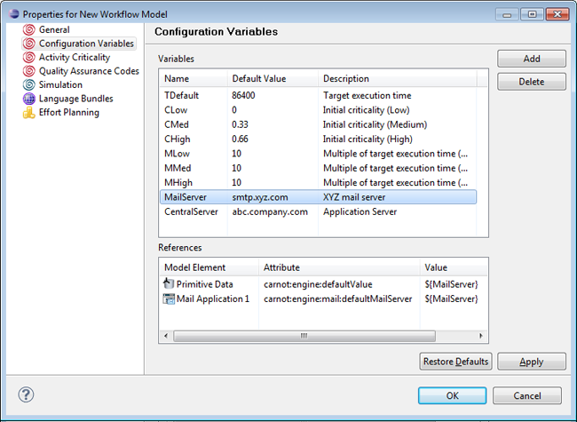
Figure: Configuration Variables
Please note that variables obtained in previous refreshes will be kept and stored with the model on saving even if they do not occur in the model anymore.
To add a new configuration variable click the Add button in the upper right corner of the dialog. A new entry is added to the Variables table, where the name, default value and description can be entered.
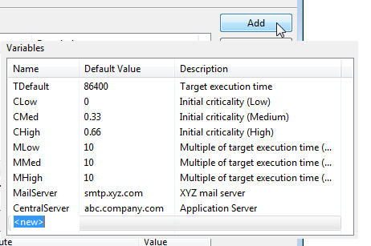
Figure: Add a new variable.
Variables can be deleted explicitly by selecting and clicking the Delete button. A dialog opens with the following options how the deletion should be performed:
Decide for one of these options by selecting the appropriate radio button. The last option additionally offers a text field to provide the literal the variable to be substituted with.
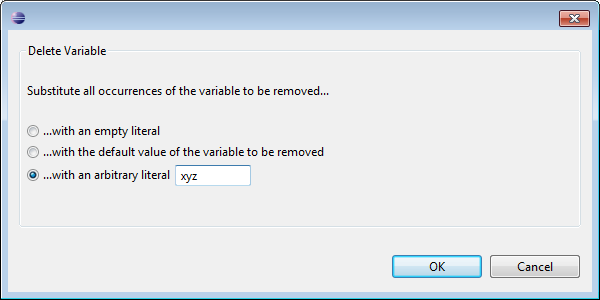
Figure: Variables Delete Confirmation Dialog
Note
Take care to substitute a deleted configuration variable with a reasonable value, especially if it is referenced
in a data path or a transition condition!
For example, we use a configuration variable named CustomerID with a default String value
4711.
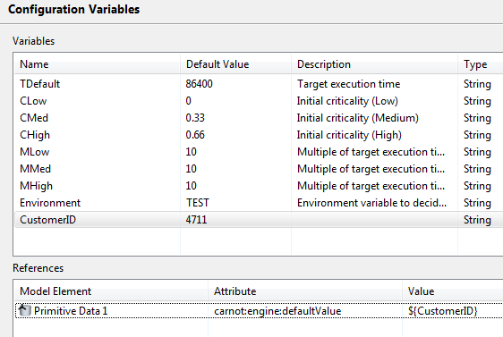
Figure: Example Configuration Variable
This variable is referenced from a Primitive data via ${CustomerID}.
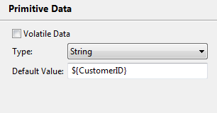
Figure: Configuration variable referenced from a Primitive Data
From the Configuration Variables tab, we delete this variable with three different options:
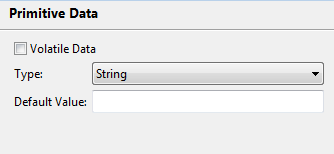
Figure: Default value replaced with empty literal
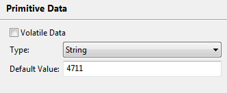
Figure: Default value replaced with default variable value
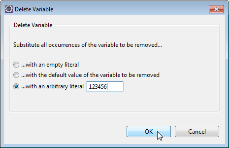
Figure: Enter text as arbitrary literal
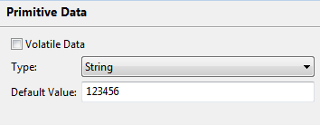
Figure: Default value replaced with specified text
To rename a variable, you can simply edit its entry in the Name column of the Variables table. With this operation, all occurrences of the variable are substituted by the new variable name. Note that the References section is refreshed and displaying the new name in the Value column after the model is saved.
In the References table, all model elements a variable that is selected in the Variables part is used in, are displayed. The corresponding table has the following three columns:
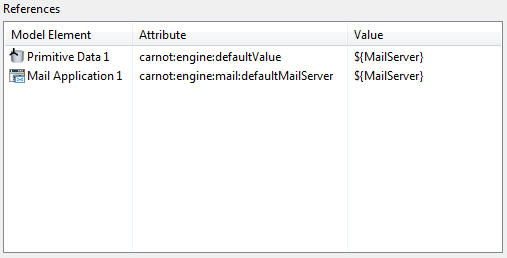
Figure: References Table
When creating a new model, predefined configuration variables are created for this model, which are used for activity criticality. For details on the default configuration variables defined for activity criticality, refer to section Default configuration variables of chapter Activity Criticality in the Concepts section.
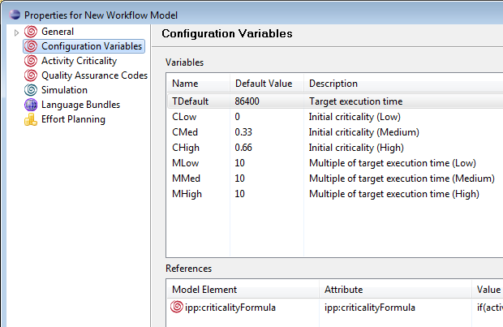
Figure: Default Configuration Variables
Variables can be referenced from all model element properties that are accessible via String properties from the modeling environment by using the following syntax:
${variable name}
This also includes properties being introduced via extension point implementations and hence allows to use variables also in custom extensions, e.g. application types.
If a variable does not exist already, it is created automatically.
Using configuration variables is not supported in the following cases:
The variable name must not contain invalid characters like "/ $ { } *". In case the name contains such characters, it is not possible to save the property page changes. However, it is possible to define an invalid variable within a model element, but a corresponding validation warning is displayed in the problems view, as described in section Variable Validation. Such a variable is listed in the configuration panel, but flagged as invalid.
Invalid variable names are flagged in the Configuration Variables property page pane in the following way:
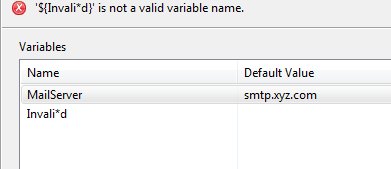
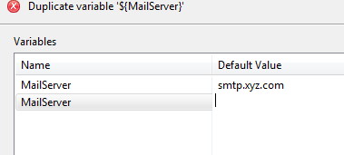
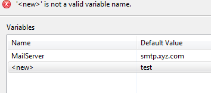
For example, to create a variable MailServer in a primitive data element, enter the default value ${MailServer}.
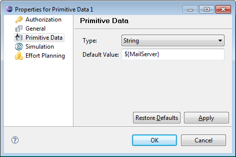
Figure: Defining a Variable in a Primitive Data
To create the variable MailServer in the property page of a mail application element, enter ${MailServer} in the Mail Server entry field.
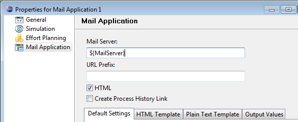
Figure: Defining a Variable in a Mail Server Application
In case strings of the form ${...} are used literally in model element properties, escape the corresponding string by a "\":
\${...}
Using the escape, the ${...} construct is taken as plain text instead of a variable.
You can define a data type for a configuration variable, which initiates a type validation of the values defined via API or from within the Configuration Variables view in the Portal. This allows runtime configuration of arbitrary server-side security-relevant data at required places in the model.
The following two types are supported for configuration variables:
To create a configuration variable of type Password, perform the following steps:
${name:type}. For example,
${token:Password}. Note that the type must be specified as Password.
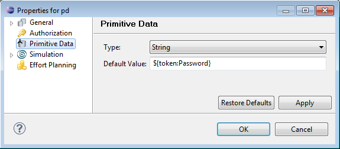
Figure: Default Value as Password Type
token, the type is displayed as Password.
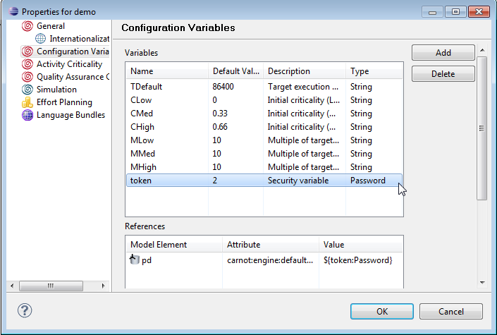
Figure: Configuration Variable of Password Type
Validation warnings and errors are displayed in the Problem View after saving the model and selecting the Validate option from the model context menu. Please refer to the chapter Model Validation for details. Additionally you can see in the Outline view if validation errors or warnings are present. Model elements are marked with an error or warning overlay icon accordingly.
Validation warnings on configuration variables occur in the following cases:
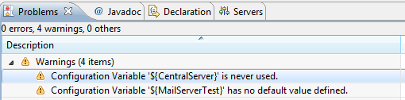
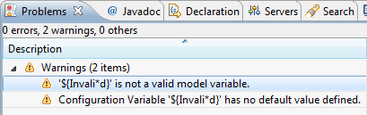
Validation errors on configuration variables might occur in the following cases:
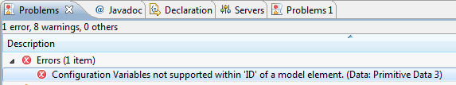
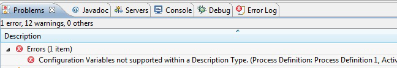
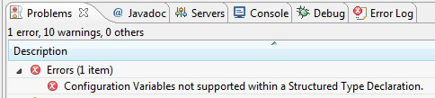
Configuration variables, their values and their descriptions are stored in the model file as extended attributes, e.g.:
<carnot:Attribute Name="ipp:variables[0]:name" Value="MailServer" Type="String"/> <carnot:Attribute Name="ipp:variables[0]:defaultValue" Value=" smpt.sungard.com" Type="String"/> <carnot:Attribute Name="ipp:variables[0]:description" Value="The Mail Server. " Type="String"/> <carnot:Attribute Name="ipp:variables[1]:name" Value="ServiceURL" Type="String"/> <carnot:Attribute Name="ipp:variables[1]:defaultValue" Value=" http://www.sungard.com/service" Type="String"/> <carnot:Attribute Name="ipp:variables[1]:description" Value="The service URL. " Type="String"/>
Note that you have to save the model to see the updated entries.